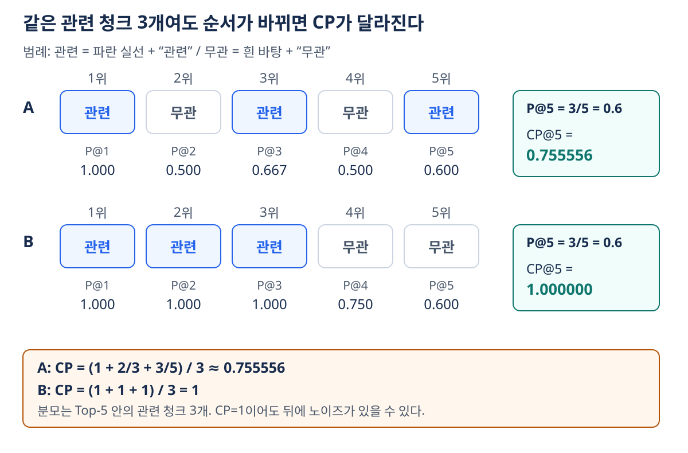
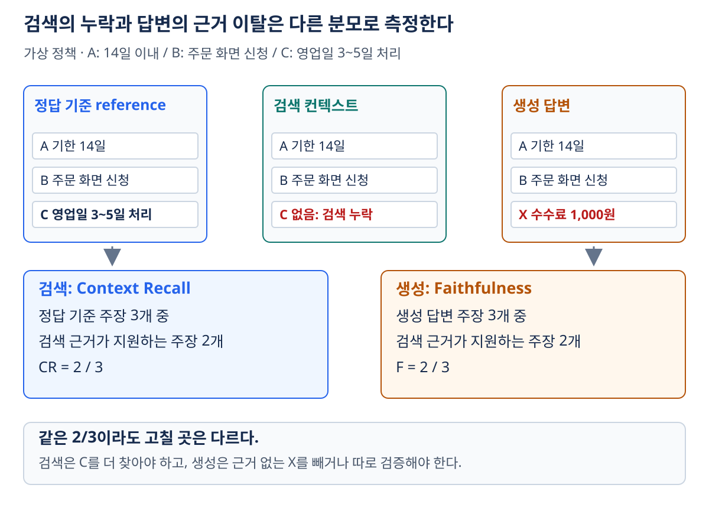
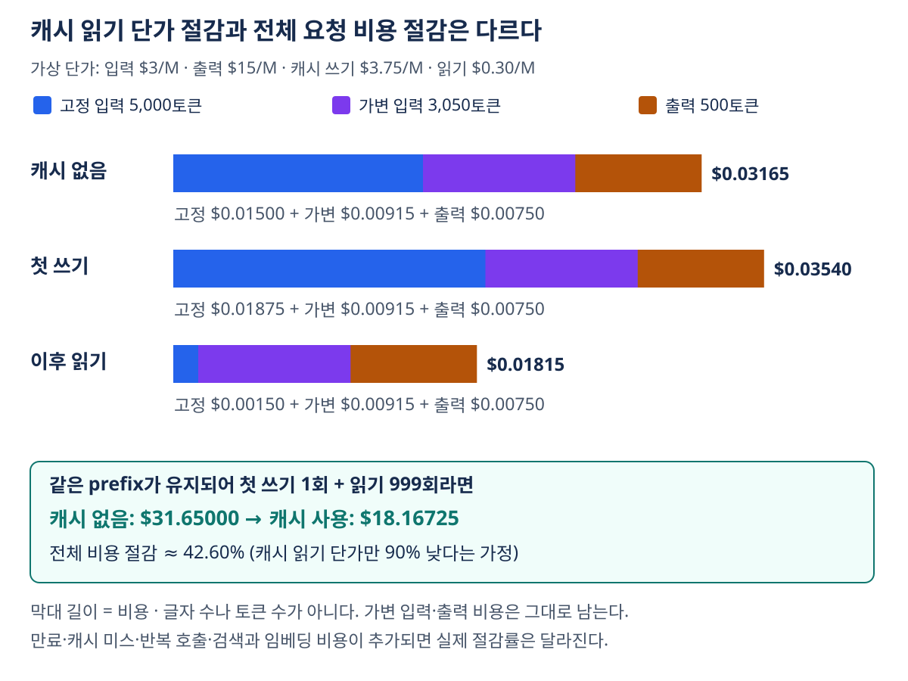

12. RAG 평가와 운영
이전: 도구 사용과 Agentic RAG · 학습 안내
이 장의 목표는 ‘답이 좋아 보인다’를 무엇이 좋아졌는지 설명할 수 있는 측정으로 바꾸는 것이다. 검색 근거·최종 답변·거절 판단·비용·지연을 나눠 보고, 같은 평가 질문에 여러 구성을 비교한다. 지표가 높아도 어떤 실패가 남는지 해석하는 것이 수치를 외우는 것보다 중요하다.
1. 검색 성공과 답변 성공을 분리한다
가상의 예시 정책에 대한 질문이 ‘일반 상품의 환불 기한과 신청 방법은?’이고 정답 근거가 다음 두 사실이라고 하자. 아래 정책·기간은 학습용 설정이다.
- 일반 상품은 구매 후 14일 이내에 신청한다.
- 주문 화면에서 환불 요청을 제출한다.
검색기가 첫 사실만 찾았다면 생성기는 기한을 정확히 답해도 절차를 빠뜨릴 수 있다. 반대로 두 사실을 모두 찾았는데 ‘30일 이내’라고 생성하면 검색보다 답변 단계의 문제다.
| 측정 대상 | 입력·기준 | 알 수 있는 것 |
|---|---|---|
| 문서 검색 | 검색 ID·순위와 관련 문서 라벨 | Recall@K·MRR 등으로 근거를 찾았는지 |
| 컨텍스트 품질 | 검색한 청크와 질문·reference | 필요한 사실의 포함·노이즈·순위 |
| 답변 정확성 | 생성 답변과 reference·허용 표현 | 최종 요구사항을 맞혔는지 |
| 근거 충실성 | 답변 주장과 검색 컨텍스트 | 제공된 근거 밖의 주장을 만들었는지 |
| 거절 판단 | 답할 수 있는지에 대한 라벨 | 모르는 질문에 추측하는지·과하게 거절하는지 |
| 운영 성능 | 토큰·호출·시간·오류 로그 | 품질을 얻는 데 드는 비용과 안정성 |
문서 ID 기준 Recall은 03장의 지표다. 아래의 주장 기반 Context Recall과 이름이 비슷하지만 분모가 다르다.
2. RAGAS 계열 지표: 먼저 입력을 확인한다
RAGAS는 하나의 고정된 ‘네 지표 공식’만 있는 도구가 아니다. 검색과 생성을 보는 네 관점을 정리하되, 같은 이름에도 reference 사용 여부·판정 방법·API 버전이 다를 수 있다. 여기서는 지표의 의미와 계산을 배우며 특정 버전의 설치·호출 코드를 보장하지 않는다.
| 지표·방식 | 주로 필요한 입력 | 묻는 질문 |
|---|---|---|
| reference 기반 Context Precision | 질문, 순서 있는 검색 청크, reference answer | 정답에 유용한 청크를 앞쪽에 놓았는가? |
| reference 없는 Context Precision 계열 | 질문, 검색 청크, 생성 답변 | 생성 답변을 기준으로 청크가 유용한가? |
| LLM 기반 Context Recall | 검색 청크, reference answer; 구현에 따라 질문 | reference의 필요한 사실을 검색했는가? |
| Faithfulness | 생성 답변, 검색 청크; 구현에 따라 질문 | 답변의 각 주장을 근거가 뒷받침하는가? |
| Answer/Response Relevancy | 질문, 생성 답변, 판정 LLM·임베딩 | 답변이 원래 질문을 다루는가? |
reference 없는 Context Precision 계열은 실제 정답 대신 생성 답변에 관련성을 맞출 수 있어, 틀린 답변을 기준으로 평가가 돌아갈 위험이 있다. 공식 문서는 현재 Context Utilization과 legacy without-reference 예제도 구분한다. 지표 이름만 저장하지 말고 평가기·필요 필드·버전을 함께 기록한다. 공식 Context Precision 문서
2.1 Context Precision: 단순 비율과 순위 지표를 구분한다
검색한 K개 청크의 관련 여부를 vᵢ∈{0,1}라고 하자. 앞의 i개 중 관련 비율을 P@i=(Σ_{j≤i}vⱼ)/i라고 하면 이 장의 순위 기반 식은
분모는 이번 Top-K 안의 관련 항목 수다. 전체 corpus의 관련 문서 수를 쓰는 AP와 그대로 동일시하지 않는다. 실무에서는 판정기가 각 청크의 관련성을 결정하므로 지표값에도 판정 오차가 들어간다.
관련성 배열이 [1,0,1,0,1]인 Top-5를 계산해 보자.
| 순위 i | 관련 vᵢ |
P@i |
합산 항 P@i×vᵢ |
|---|---|---|---|
| 1 | 1 | 1 | 1 |
| 2 | 0 | 1/2 | 0 |
| 3 | 1 | 2/3 | 2/3 |
| 4 | 0 | 2/4 | 0 |
| 5 | 1 | 3/5 | 3/5 |
Precision@5=3/5=0.6이지만, CP@5=(1+2/3+3/5)/3≈0.755556이다. 관련 세 개가 모두 앞에 있으면 CP는 1이다. 마지막에 노이즈를 붙여도 앞의 관련 순위가 바뀌지 않으면 이 CP는 변하지 않을 수 있다. 따라서 CP가 1이라고 ‘검색한 모든 청크가 관련 있다’는 뜻은 아니다.
계산 구분: ‘Top-5 중 3개 관련 → 0.60’은 단순 Precision 계산이다. 순위 가중 CP에는 관련 항목의 위치가 필요하므로 같은 값이라고 둘 수 없다. 관련 항목이 하나도 없으면 원식은 0/0이므로, 평가 정책에서 0·결측·별도 오류 중 무엇으로 처리했는지 명시한다.

그림 읽기: 두 줄은 관련 청크 수가 같아 P@5는 모두 0.6이다. A의 분자는 1+2/3+3/5이지만, B는 1+1+1이다. 따라서 CP는 앞쪽 배치에 반응한다. 색을 보지 않아도 ‘관련·무관’ 라벨과 순위로 재계산할 수 있다.
2.2 Context Recall: reference의 필요한 사실을 얼마나 찾았나
reference answer를 원자적 주장으로 나눈다. 위 환불 예제에 ‘영업일 기준 3~5일 내 처리’까지 더해 reference가 세 주장이라면, 검색 컨텍스트가 기한과 신청 방법만 뒷받침할 때
한 문장에 사실이 두 개 있으면 두 주장으로 나눌 수 있다. 문장 개수만 세는 방식과 혼합하지 않는다. reference가 누락·오류를 포함하면 점수도 잘못된다. 이 방식에는 reference가 필요하다. ‘LLM 평가이므로 모든 지표가 정답 없이 계산된다’는 설명은 성립하지 않는다. ID 기반 변형은 reference 문서 ID가 기준이다. 공식 Context Recall 문서
2.3 Faithfulness: 답변이 제공된 근거를 벗어났나
답변이 ‘환불은 14일 이내이며, 주문 화면에서 신청하고, 수수료는 1,000원입니다’라고 했는데 앞의 두 주장만 근거에 있다면
분모는 생성 답변의 주장이다. CR의 분모인 reference 주장과 다르다. 근거 자체가 틀렸어도 그 내용을 충실하게 반복하면 높은 점수가 나올 수 있다. 따라서 Faithfulness는 외부 세계에서의 사실 정확성을 대체하지 않는다. 공식 Faithfulness 문서
‘모르겠습니다’처럼 사실 주장이 없는 답은 분모가 0일 수 있다. 이를 임의로 만점 처리하면 전부 거절하는 시스템이 유리해진다. 사용한 구현의 처리와 별개로, 답변률·정답률·적절한 거절을 함께 보고해야 한다.
2.4 Answer Relevancy: 질문에 답하고 있는가
이 장에서 다루는 방식은 답변을 보고 가능한 질문들을 역생성한 다음, 원래 질문 임베딩과의 cosine similarity를 평균한다.
‘환불 기한은?’에 회사 역사를 답하면 역생성한 질문도 회사 역사에 가까워져 낮은 점수가 예상된다. 그러나 ‘환불은 30일 이내’라는 잘못된 답도 원질문과 주제가 같으므로 관련성은 높을 수 있다. 관련성은 정확성이 아니다. cosine의 수학적 범위는 −1~1이므로 평균이 항상 확률처럼 0~1에 있다는 보장도 없다. 공식 Response Relevancy 문서
위 식은 질문 역생성과 유사도 평균이라는 원리를 나타낸다. 실제 구현에서는 비확정적·불성실 응답 판정이나 유효성 처리 등이 추가될 수 있다. 선택한 판본의 구현을 확인하지 않은 채 이 식만으로 라이브러리의 모든 출력값을 재현한다고 가정하지 않는다.

그림 읽기: 왼쪽은 기준 정답의 세 주장, 가운데는 실제 검색한 두 사실, 오른쪽은 생성한 세 주장이다. CR은 왼쪽 세 개 중 무엇이 가운데에 있는지 보고, Faithfulness는 오른쪽 세 개 중 무엇이 가운데로 뒷받침되는지 본다. 둘 다 2/3이지만 검색의 C 누락과 생성의 X 추가는 서로 다른 실패다.
3. 지표 조합은 진단의 시작점이다
| 관측 패턴 | 가능한 원인 | 다음에 확인할 것 |
|---|---|---|
| CP 낮음, CR 높음 | 근거는 있지만 노이즈·순서 문제 | reranking, 중복, Top-K |
| CP 높음, CR 낮음 | 찾은 일부는 맞지만 필수 사실 누락 | multi-hop·질문 분해·청킹·필터 |
| 근거는 충분, Faithfulness 낮음 | 생성이 근거 밖 주장 추가 | 주장-출처 연결, 프롬프트, 충돌 처리 |
| Faithfulness 높음, 답변 정확도 낮음 | 틀린 근거, 불완전 답, 잘못된 적용 | 자료 최신성·조건·reference |
| AR 높음, 정확도 낮음 | 주제는 맞지만 사실이 틀림 | 실제 주장과 정답 비교 |
| 거절 증가, Faithfulness 상승 | 보수적 응답의 영향 가능 | answerable 질문의 과도한 거절 |
이는 원인 후보이지 확정 판정이 아니다. 청크 한 개의 노이즈가 모델을 크게 흔들 수도 있고, 평가기 오류가 모든 지표에 함께 반영될 수도 있다. ‘네 지표가 모두 0.8이면 운영 가능’ 같은 보편 임계값을 두지 않는다. 허용 위험·질문 유형·판정 신뢰성에 맞춰 정한다.
4. Golden Set: 평가 질문과 판정 계약을 버전으로 관리하기
질문만 모으지 말고 어떤 근거가 있어야 무엇을 답할 수 있는지 기록한다. 필요한 입력은 선택한 지표마다 다르다. 작은 시작용 세트라도 실제 질문·어려운 질문·답이 없는 질문·시점이 중요한 질문을 구분해야 한다.
{
"id": "refund-001",
"question": "예시 정책의 일반 상품을 구매한 지 10일째인데, 환불 신청은 어디서 하나요?",
"answerable": true,
"required_claims": ["일반 상품은 구매 후 14일 이내 신청 가능", "주문 화면에서 환불 요청"],
"reference_answer": "예시 정책의 일반 상품은 구매 후 14일 이내에 주문 화면에서 환불 요청을 제출합니다.",
"reference_doc_ids": ["refund-policy-v2"],
"tags": ["single-hop", "policy"],
"corpus_version": "policy-2026-11"
}
이는 형식 예시다. 실제 구현은 청크 ID·페이지·근거 span·시간 조건·허용 답변을 추가할 수 있다. 질문 생성에 사용한 문서가 평가 시점에도 같은 판본인지 확인한다.
합성 질문은 초기 범위를 채우는 데 유용하지만 문서의 표현을 그대로 되풀이해 검색을 쉽게 만들 수 있다. 사람이 자연스러움·정답·답할 수 없음 라벨을 검수하고, 실제 질문과 별도로 태그한다. 튜닝에 계속 쓴 개발 세트와 최종 비교용 보류 세트를 나누면 평가셋에 맞춘 과적합을 줄일 수 있다.
질문 수가 많다고 자동으로 좋은 평가는 아니다. 도메인·난이도별 표본 수, 대표성, reference 품질, 반복 가능한 판정 규칙이 먼저다. ‘50개·200~500개’ 같은 수는 시작 규모 예시이며 통계적 충분성을 보장하지 않는다.
5. LLM-as-Judge도 검증 대상이다
판정 LLM에는 질문, 답변, 근거, 평가 기준을 명확하게 분리해 준다. Faithfulness라면 주장 목록과 각 주장의 지원 여부·근거 위치를 구조화해 받는다. 자연어 설명을 길게 받는 것보다 판정과 근거 연결이 맞는지 확인하는 일이 중요하다.
- 모델·길이 편향: 생성기와 같은 계열의 문체나 긴 답을 선호할 수 있다. 사람 검수와 다른 판정기 표본 비교를 둔다.
- 순서 편향: A/B 비교에서는 답변 순서를 바꿔 평가하고 결과가 뒤집히는지 본다.
- 오류 전파: claim 분해가 틀리면 지원 여부 판정도 틀릴 수 있다. 중간 산출물 일부를 검수한다.
- 불안정성: 같은 질문을 여러 번 평가해 변동을 보고, 모델·프롬프트·설정·실행 시점을 기록한다.
- 판정 실패: timeout·JSON 파싱 실패를 품질 0이나 성공으로 바꾸지 말고 별도 집계한다.
사람 판정과 비교할 때도 정확히 같은 과제를 써야 한다. 일치율·순위 상관·Cohen κ는 서로 다른 통계다. 어떤 실험의 ‘인간 일치율 약 85%’를 모든 도메인과 모델에 적용되는 상수로 쓰지 않는다.
6. 비교 실험 사례를 읽는 법
다음은 검색 구성과 반복 전략을 비교한 보고 사례다. 실험 조건과 표본 누락을 함께 읽는 연습에 사용한다. 이 교재에서 새로 실행한 결과나 모든 RAG 환경의 대표 성능은 아니다.
| 조건 | 보고된 실험 설정 |
|---|---|
| corpus | 뉴스 기사 609개 |
| 정확도용 질문 | MultiHopRAG 층화 표본 250개: comparison 84, inference 80, temporal 57, null 29 |
| 정확도 정의 | (correct + 0.5×partial) / n; strict 정답 개수 비율과 다름 |
| RAGAS 질문 | 같은 분포의 120개 하위 표본 |
| 모델·임베딩 | 생성·분해·판정은 Haiku 4.5, 임베딩은 BGE-small-en-v1.5 |
| Self-RAG 구현 | 최대 3 hop, 충분성 판단 후 후속 검색 |
| 실행 환경 | local CLI pool, 일부 단계에 subprocess overhead |
| 구성 | 보고된 전체 정확도 | 보고된 null 질문 성적 | 해석할 점 |
|---|---|---|---|
| Dense | 37.8% | 93.1% | 기준선 |
| Hybrid | 50.6% | 96.6% | 희소·밀집 결합 효과 |
| + Decomposition | 61.6% | 96.6% | 복합 질문 분해의 효과 |
| Self-RAG | 65.4% | 19.0% | 전체 개선과 답 없는 질문 악화가 동시에 관측됨 |
| Plan-and-Execute | 58.6% | 100% | 계획 기반 구성이 반복 방식과 다르게 작동 |
null 질문의 높은 성적은 적절한 거절을 포함한 평가 결과로 읽는다. Self-RAG의 전체 성적이 높다고 모든 질문 유형에서 우수한 것은 아니다. 이 사례에서는 inference 질문의 개선과 마지막 hop의 답변 압력이 공존하는 것으로 해석했다.
위 정확도에는 부분 정답 0.5점이 포함되므로 250개 평가에서도 37.8%처럼 0.4%p의 배수가 아닌 값이 가능하다. 학습자가 별도 실험에서 strict accuracy를 사용한다면 같은 이름의 수치로 바로 비교하면 안 된다.
RAGAS 표는 Dense→Self-RAG에서 Context Recall 0.564→0.758, Faithfulness 0.982→0.923을 제시한다. 근거를 더 모았어도 답변이 그 근거를 벗어날 수 있다는 사례다. Plan-and-Execute 점수는 120개 중 72개만 평가 성공한 표본이고, 다른 구성도 119~120개 성공으로 기록되어 있다. 서로 같은 행을 평가했는지 확인하지 않고 평균의 우열을 확정하면 안 된다.
이 파일럿의 CLI 지연 31.3초·28.2초를 서비스 API의 일반 지연으로 쓰지 않는다. 실행기 overhead·부하·호출 방식이 다르면 지연이 달라지므로 직접 측정해야 한다. 데이터셋이나 비교 구성이 다른 정확도 개선율을 같은 실험의 결과처럼 합쳐 설명해서도 안 된다.
7. 회귀 평가: 같은 질문의 변화부터 본다
모델·청킹·프롬프트·인덱스 중 무엇을 바꿨는지 실험 ID에 기록한다. 같은 corpus·Golden Set·판정기로 이전과 새 구성을 평가하고, 질문별 차이를 남긴다.
고정 평가셋과 corpus 버전
→ 기준 구성의 답변·검색 결과 저장
→ 변경 구성 실행
→ 동일 판정 계약으로 평가
→ 전체 평균 + 질문 유형별 성적 + 실패·누락 수 비교
→ 퇴행 사례 사람 검수
→ 품질·비용·지연 조건을 만족하면 채택
예를 들어 100개 질문에서 기준 정답 72개, 변경 정답 76개라 해도 +4%p만 기록하지 않는다. 기준만 맞힌 8개와 변경만 맞힌 12개를 찾아 어떤 실패가 바뀌었는지 확인한다. 같은 질문의 paired 비교와 재표집 등으로 불확실성을 살펴보는 것이 서로 다른 질문 평균을 비교하는 것보다 낫다.
timeout 때문에 20개가 누락됐다면 성공한 80개 평균만 이전의 100개 평균과 비교하지 않는다. 공통 성공 표본 점수와 전체 성공률을 분리한다. −3%p·−5%p 같은 차단 기준도 실제 업무의 허용 손실과 평가 변동을 보고 정해야 한다.
8. 운영 비용을 입력·출력·반복 호출로 분해하기
LLM 요청 하나의 단순 비용은 입력 토큰 I, 출력 토큰 O와 백만 토큰당 단가 r_in, r_out으로
다. RAG 전체 비용에는 임베딩·검색·reranker·판정·재시도·인덱스 구축과 저장 비용도 있다. Agentic RAG는 LLM을 여러 번 호출하고 문맥 이력이 길어지므로 최종 답변 길이만으로 비용을 추정하면 안 된다.
캐시가 줄이는 부분을 구분한다
Prompt caching은 반복되는 동일한 프롬프트 prefix의 처리를 재사용하는 방식이다. 긴 지시문·도구 정의·정적 자료가 후보가 될 수 있다. 매 질문마다 바뀌는 Top-k 청크는 같은 prefix를 만들지 못하면 이득이 없다. TTL·최소 길이·쓰기·읽기 단가·정확한 일치 조건은 제공자와 모델에 따라 확인한다. 캐싱은 답변이 사실인지 검증하거나 생성 출력 토큰 비용을 없애지 않는다. 공식 Prompt caching 설명
가상의 견적 조건으로 비용 구조를 계산해 보자. 다음 단가는 계산 연습을 위한 가정이며 현재 가격 추천이 아니다. 입력 $3/M, 출력 $15/M, 캐시 쓰기 $3.75/M, 읽기 $0.30/M이라고 가정한다. 매 요청에 고정 prefix 5,000토큰, 가변 입력 3,050토큰, 출력 500토큰이 있다.
| 경우 | 계산 | 요청당 비용 |
|---|---|---|
| 캐시 없음 | 8050×3/10⁶ + 500×15/10⁶ |
$0.03165 |
| 첫 요청·캐시 쓰기 | 5000×3.75/10⁶ + 3050×3/10⁶ + 500×15/10⁶ |
$0.03540 |
| 이후·캐시 읽기 | 5000×0.30/10⁶ + 3050×3/10⁶ + 500×15/10⁶ |
$0.01815 |
첫 쓰기 한 번과 읽기 999번이 모두 유효하면 1,000회 총비용은 $18.16725다. 캐시 없는 $31.65보다 약 42.60% 줄어든다. 캐시 읽기 단가가 일반 입력의 10%라는 가정과 전체 요청 비용 90% 절감은 같은 말이 아니다. 캐시가 만료되어 재작성하거나 hit 비율이 낮으면 이득은 더 줄어든다.

그림 읽기: 막대의 파란 부분만 고정 prefix의 처리 비용이며, 보라색 가변 입력과 주황색 출력은 이 가정에서 바뀌지 않는다. 첫 쓰기는 일반 요청보다 비싸고, 반복 읽기에서 절감이 생긴다. 읽기 단가 90% 절감과 요청 전체 42.60% 절감을 구분해서 읽는다.
운영에서는 품질을 유지하는 범위에서 후보·컨텍스트 압축, 적절한 모델 라우팅, 독립 작업 병렬화, 비실시간 작업 batching, 인덱스 튜닝을 비교한다. 출력 streaming은 첫 반응을 빨리 보여줄 수 있지만 총 처리 완료 시간이 그만큼 줄었다는 뜻은 아니다.
9. 함께 남길 운영 기록
| 기록 | 이유 |
|---|---|
| 질의·설정·corpus·평가셋 버전 | 결과 재현과 원인 추적 |
| 검색 ID·점수·최종 컨텍스트 | 검색과 생성 문제 분리 |
| 도구 호출·오류·종료 사유 | 반복 검색의 이득과 실패 확인 |
| 입력·출력·캐시 읽기·쓰기 토큰 | 실제 비용 계산 |
| 단계별 시간, TTFT, 전체 지연 p50·p95 | 평균에 숨는 느린 요청 확인 |
| 정확도·거절·Faithfulness·누락 수 | 품질과 가용성의 동시 확인 |
토큰·지연을 절감했어도 질문 유형별 정답과 거절이 악화되지 않았는지 같은 평가로 확인한다. 개인·민감 자료를 포함하는 운영 로그는 원문을 무조건 보관하기보다 필요한 진단 정보와 접근 범위를 설계한다.
10. 확인 질문과 해설
- Top-5 관련성이
[1,1,1,0,0]일 때 Precision@5와 위 CP@5는 각각 얼마인가? - Faithfulness가 1이면 정답이 참이라고 보장되는가?
- reference 없이 LLM 기반 Context Recall을 같은 정의로 계산할 수 있는가?
- Plan-and-Execute 72개 평균과 다른 구성 120개 평균을 바로 비교해도 되는가?
- cache read가 입력 단가의 10%라면 전체 비용도 90% 절감되는가?
해설
- Precision@5는 0.6, CP@5는
(1+1+1)/3=1이다. CP는 관련 청크의 앞쪽 배치를 본다. - 아니다. 잘못된 근거를 충실히 반복하거나 질문의 일부만 답했을 수도 있다.
- 아니다. reference 주장 또는 reference 문서 등 비교할 기준이 필요하다.
- 안 된다. 표본 누락이 무작위인지 알 수 없고 평가 질문도 다를 수 있다. 공통 표본과 평가 성공률을 함께 본다.
- 아니다. 가변 입력·출력·캐시 쓰기·다른 단계 비용이 남는다.
11. 한 번의 개선을 판단하는 질문
같은 질문·같은 corpus에서 필요한 사실을 더 찾았는가, 답변이 근거를 지키는가, 답 없는 질문을 적절히 거절하는가, 평가 실패와 비용·지연은 늘지 않았는가를 함께 확인한다. 이 장의 식·사례표·그림으로 판정 기준을 세우고, 실제 시스템에서는 그 기준을 고정해 변경 전후를 비교한다.